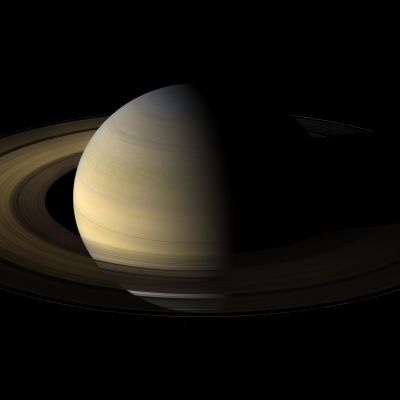

Vad är en planet? En planet är en himlakropp som rör sig i en omloppsbana runt en stjärna, dominerar sin omgivning och har tillräckligt mycket masssa för att vara nästintill rund. Mer vetenskapligt så får en himlakropp statusen planet om den: Är ett objekt som är i en stjärnas omloppsbana. Är tillräckligt massiv för att dess gravitation får himla kroppen att uppnå hydrostatiskt jämnvikt och har rensat ut närområdet på mindre objekt.
Mars är den fjärde planeten från solen och solsystemets näst minsta planet. Den har fått sitt namn efter den romerska krigsguden Mars och kallas ibland för "den röda planeten" på grund av sitt rödaktiga utseende. Den röda färgen beror på stora mängder järnoxid (rost) som finns fördelat över ytan och i atmosfären. Mars är en av de fyra stenplaneterna och har en tunn atmosfär som till största delen består av koldioxid. Ytan är täckt av kratrar av olika storlekar likt månen, men Mars har precis som jorden även många vulkaner, dalgångar, vidsträckta slätter och iskalotter vid polerna. Under stora delar av Mars historia skedde långvariga vulkanutbrott vilka bland annat skapade Olympus Mons, solsystemets högsta berg. De stora utbrotten har sedan länge upphört, men på ett fåtal platser bedöms mindre utbrott ha skett för endast ett par miljoner år sedan. Då detta är en kort period i ett geologiskt perspektiv förmodas planeten kunna ha en viss kvarvarande geologisk aktivitet än idag. Till skillnad från jorden har dock Mars ingen aktiv plattektonik och inget globalt magnetfält.

Saturnus är den sjätte planeten från solen och den näst största i solsystemet. Den är en gasjätte, känd sedan förhistorisk tid. Galileo Galilei var den första att observera den genom ett teleskop år 1610. Han såg planeten när ringarnas läge fick planeten att se ut som tre planeter i en klump, vilket gjorde dåtidens forskare mycket förbryllade. Saturnus har 95 gånger så stor massa som jorden och har nio gånger så stor diameter. Planeten är namngiven efter den romerska guden Saturnus.
Venus den andra planeten i solsystemet från solen räknat och den är nästan lika stor som jorden. Då Venus rör sig runt sin egen axel i motsatt riktning mot rörelsen runt solen så kan man säga att den roterar baklänges, vilket endast Venus och Uranus gör. Venus är den enda planeten i hela solsystemet vars dygn är längre än dess år eftersom Venus snurrar ett varv runt solen på 225 jorddygn men behöver hela 243 jorddygn för att rotera ett enda varv runt sin egen axel. Liksom de övriga sedan antiken kända planeterna (från Merkurius ut till Saturnus) namngavs Venus av grekerna. Den fick namn efter deras kärleksgudinna Afrodite, och liksom för övriga planeter togs systemet över av romarna vars namn sedan ärvts. Deras kärleksgudinna hette Venus. Planeten har varit känd långt före antiken och haft olika namn i olika kulturer. Eftersom den främst ses i samband med solnedgång och soluppgång kallas den för aftonstjärnan respektive morgonstjärnan på flera olika språk. Venus är också den himlakropp som syns bäst på himlavalvet, efter solen och månen.